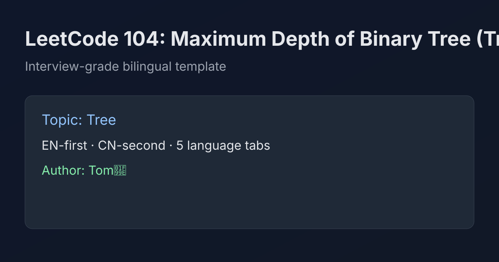

LeetCode 104: Maximum Depth of Binary Tree (DFS / BFS)
LeetCode 104TreeDFSBFSToday we solve LeetCode 104 - Maximum Depth of Binary Tree.
Source: https://leetcode.com/problems/maximum-depth-of-binary-tree/

English
Problem Summary
Given the root of a binary tree, return its maximum depth. The depth is the number of nodes along the longest path from root down to a leaf.
Key Insight
The depth of a node depends only on depths of its children:
depth(node) = 1 + max(depth(node.left), depth(node.right)).
So recursion naturally matches the tree structure.
Brute Force and Limitations
You can enumerate all root-to-leaf paths and compute each path length, then take maximum. This is conceptually valid but unnecessary compared with direct DFS/BFS solutions.
Optimal Algorithm Steps
DFS recursion:
1) If node is null, depth is 0.
2) Recursively compute left and right subtree depth.
3) Return 1 + max(left, right).
BFS level order:
1) Push root into queue.
2) Process one level at a time by queue size.
3) Each processed level increments depth by 1.
Complexity Analysis
Both DFS and BFS run in O(n) time.
DFS space is O(h) recursion stack (h = tree height).
BFS space is O(w) queue size (w = max width).
Common Pitfalls
- Off-by-one: depth counts nodes, not edges.
- Returning 1 for null node (should be 0).
- BFS implementation forgetting to increase depth per level.
Reference Implementations (Java / Go / C++ / Python / JavaScript)
/**
* Definition for a binary tree node.
* public class TreeNode {
* int val;
* TreeNode left;
* TreeNode right;
* TreeNode() {}
* TreeNode(int val) { this.val = val; }
* TreeNode(int val, TreeNode left, TreeNode right) {
* this.val = val;
* this.left = left;
* this.right = right;
* }
* }
*/
class Solution {
public int maxDepth(TreeNode root) {
if (root == null) return 0;
int left = maxDepth(root.left);
int right = maxDepth(root.right);
return 1 + Math.max(left, right);
}
}/**
* Definition for a binary tree node.
* type TreeNode struct {
* Val int
* Left *TreeNode
* Right *TreeNode
* }
*/
func maxDepth(root *TreeNode) int {
if root == nil {
return 0
}
left := maxDepth(root.Left)
right := maxDepth(root.Right)
if left > right {
return left + 1
}
return right + 1
}/**
* Definition for a binary tree node.
* struct TreeNode {
* int val;
* TreeNode *left;
* TreeNode *right;
* TreeNode() : val(0), left(nullptr), right(nullptr) {}
* TreeNode(int x) : val(x), left(nullptr), right(nullptr) {}
* TreeNode(int x, TreeNode *left, TreeNode *right)
* : val(x), left(left), right(right) {}
* };
*/
class Solution {
public:
int maxDepth(TreeNode* root) {
if (!root) return 0;
return 1 + max(maxDepth(root->left), maxDepth(root->right));
}
};# Definition for a binary tree node.
# class TreeNode:
# def __init__(self, val=0, left=None, right=None):
# self.val = val
# self.left = left
# self.right = right
class Solution:
def maxDepth(self, root) -> int:
if not root:
return 0
return 1 + max(self.maxDepth(root.left), self.maxDepth(root.right))/**
* Definition for a binary tree node.
* function TreeNode(val, left, right) {
* this.val = (val===undefined ? 0 : val)
* this.left = (left===undefined ? null : left)
* this.right = (right===undefined ? null : right)
* }
*/
var maxDepth = function(root) {
if (!root) return 0;
return 1 + Math.max(maxDepth(root.left), maxDepth(root.right));
};中文
题目概述
给定二叉树根节点，返回其最大深度。最大深度是从根节点到最远叶子节点路径上的节点数。
核心思路
一个节点的深度只取决于左右子树深度：
depth(node) = 1 + max(depth(left), depth(right))。
这使得递归 DFS 非常自然。
暴力解法与不足
可枚举所有根到叶路径，逐条计算长度再取最大值。思路可行，但实现复杂度和开销都不如 DFS/BFS 直接求解。
最优算法步骤
DFS 递归：
1）空节点返回 0。
2）递归计算左右子树深度。
3）返回 1 + max(left, right)。
BFS 层序：
1）根节点入队。
2）按当前层节点数逐层处理。
3）每处理完一层，深度 +1。
复杂度分析
DFS 与 BFS 时间复杂度均为 O(n)。
DFS 额外空间 O(h)（递归栈，高度 h）。
BFS 额外空间 O(w)（队列最大宽度 w）。
常见陷阱
- 把深度当成边数而不是节点数。
- 空节点返回值写成 1（应为 0）。
- BFS 忘记按“层”累加深度。
多语言参考实现（Java / Go / C++ / Python / JavaScript）
/**
* Definition for a binary tree node.
* public class TreeNode {
* int val;
* TreeNode left;
* TreeNode right;
* TreeNode() {}
* TreeNode(int val) { this.val = val; }
* TreeNode(int val, TreeNode left, TreeNode right) {
* this.val = val;
* this.left = left;
* this.right = right;
* }
* }
*/
class Solution {
public int maxDepth(TreeNode root) {
if (root == null) return 0;
int left = maxDepth(root.left);
int right = maxDepth(root.right);
return 1 + Math.max(left, right);
}
}/**
* Definition for a binary tree node.
* type TreeNode struct {
* Val int
* Left *TreeNode
* Right *TreeNode
* }
*/
func maxDepth(root *TreeNode) int {
if root == nil {
return 0
}
left := maxDepth(root.Left)
right := maxDepth(root.Right)
if left > right {
return left + 1
}
return right + 1
}/**
* Definition for a binary tree node.
* struct TreeNode {
* int val;
* TreeNode *left;
* TreeNode *right;
* TreeNode() : val(0), left(nullptr), right(nullptr) {}
* TreeNode(int x) : val(x), left(nullptr), right(nullptr) {}
* TreeNode(int x, TreeNode *left, TreeNode *right)
* : val(x), left(left), right(right) {}
* };
*/
class Solution {
public:
int maxDepth(TreeNode* root) {
if (!root) return 0;
return 1 + max(maxDepth(root->left), maxDepth(root->right));
}
};# Definition for a binary tree node.
# class TreeNode:
# def __init__(self, val=0, left=None, right=None):
# self.val = val
# self.left = left
# self.right = right
class Solution:
def maxDepth(self, root) -> int:
if not root:
return 0
return 1 + max(self.maxDepth(root.left), self.maxDepth(root.right))/**
* Definition for a binary tree node.
* function TreeNode(val, left, right) {
* this.val = (val===undefined ? 0 : val)
* this.left = (left===undefined ? null : left)
* this.right = (right===undefined ? null : right)
* }
*/
var maxDepth = function(root) {
if (!root) return 0;
return 1 + Math.max(maxDepth(root.left), maxDepth(root.right));
};
Comments